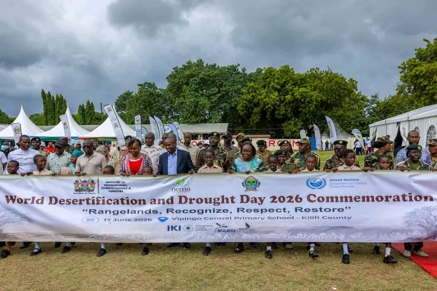
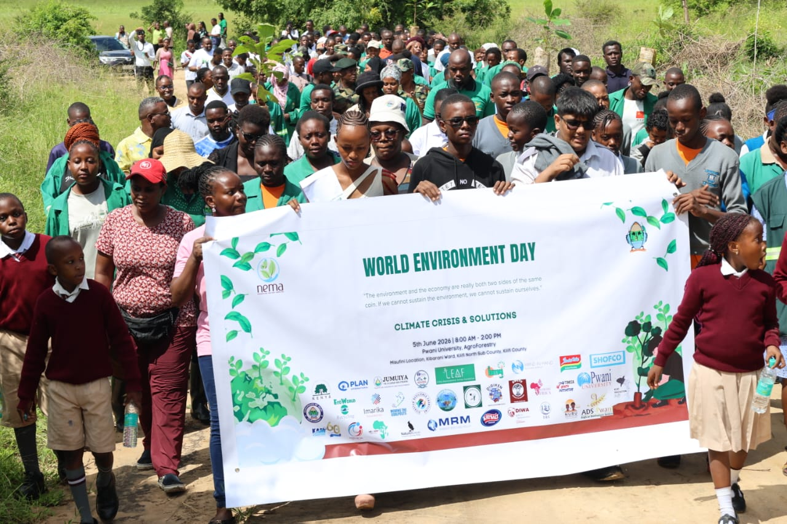
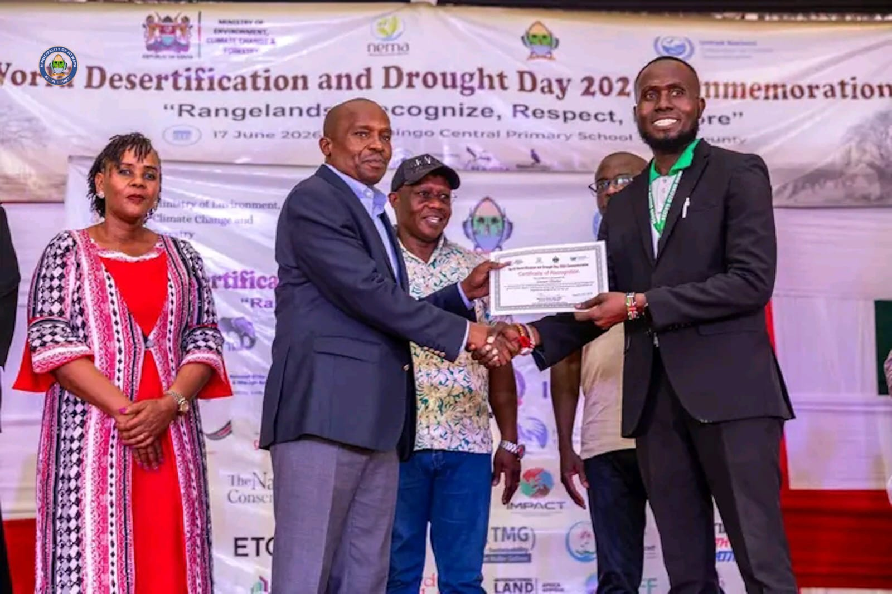
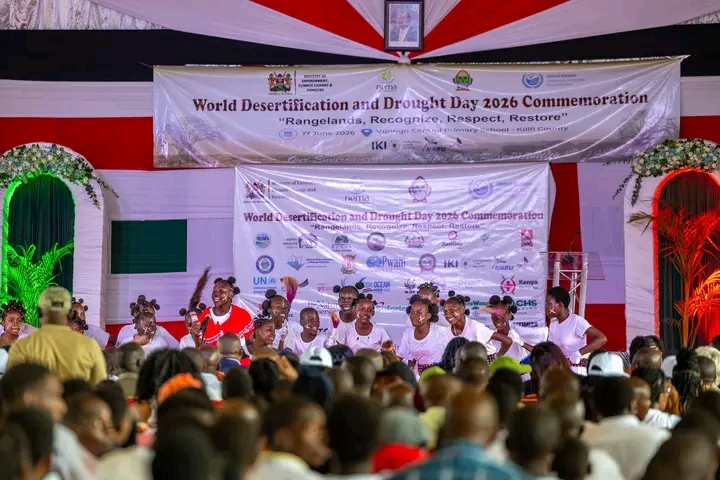
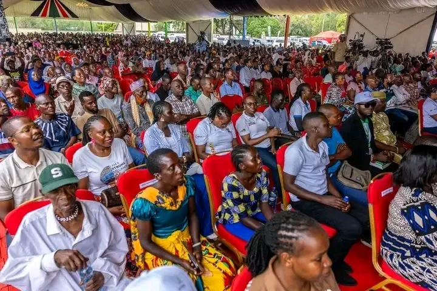
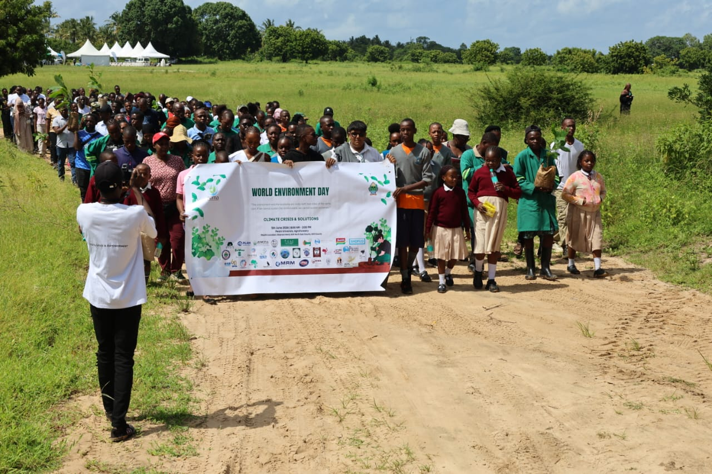
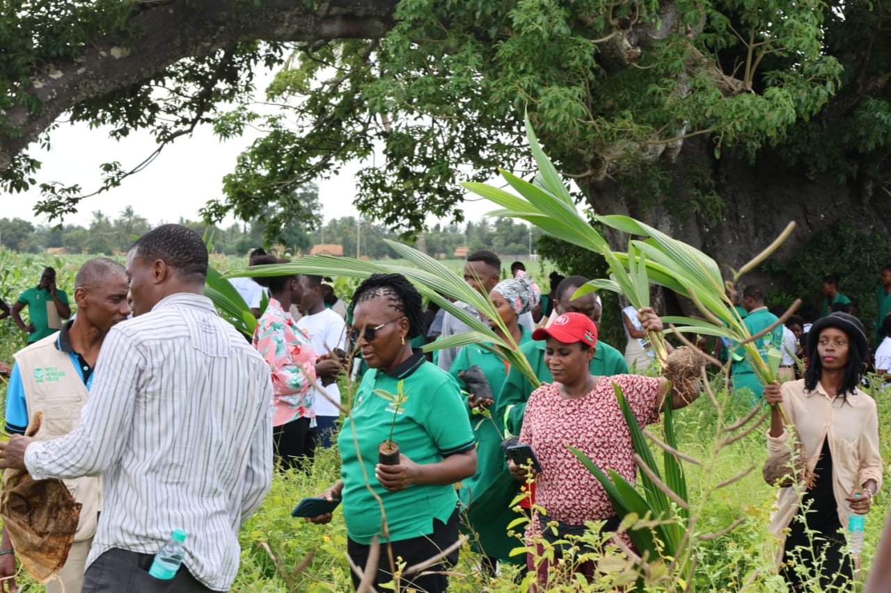

8 June 2026 • Vidazini Beach
World Oceans Day 2026
Environmental education and beach cleanup action to protect Kilifi’s marine ecosystem.
View AlbumMoments from our environmental campaigns, community cleanups, school programs, tree planting activities, and partner engagements.

17 June 2026 • Vipingo, Kilifi County
BAHA MADZO GADZE FOR CHARITY joined stakeholders in commemorating World Desertification and Drought Day 2026, where both the organization and Chairperson Mr. Steven Otieno were recognized for environmental conservation efforts.
View Album
Environmental education and beach cleanup action to protect Kilifi’s marine ecosystem.
View Album
Tree planting, climate action awareness, and stakeholder participation for a greener Kilifi.
View Album
A sports-for-environment initiative combining cleanup, youth engagement, and plastic pollution awareness.
View Album









Every image reflects community action, partnership, and environmental responsibility.
Partner With Us